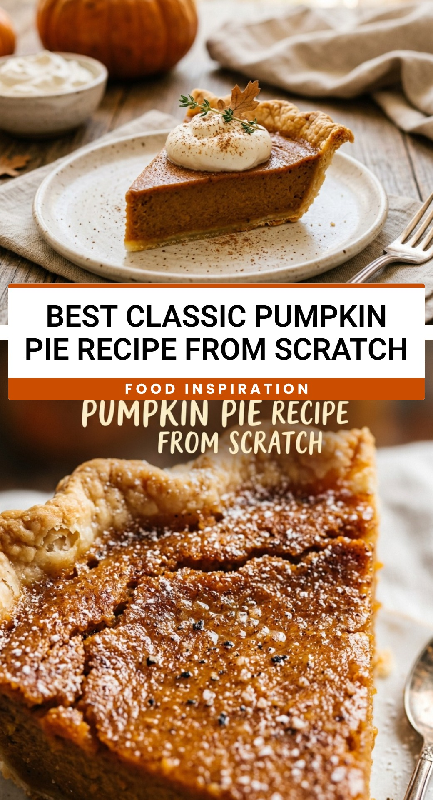

Best Classic Pumpkin Pie Recipe From Scratch
October 1, 2026

There is nothing quite like the aroma of a classic pumpkin pie baking in the oven to make a house feel like a home. This recipe brings back all the nostalgia of holiday gatherings and cozy autumn evenings. While store-bought pies are convenient, making one from scratch allows you to control the quality of the spices and the richness of the custard.
Recipe Information
Prep Time: 15 minutes
Cook Time: 55 minutes
Total Time: 1 hour 10 minutes
Servings: 8 servings
Difficulty Level: Medium
Nutrition Information
Calories per serving: 310 kcal
Protein: 6g
Carbohydrates: 38g
Fat: 14g
Fiber: 2g
Sugar: 25g
Sodium: 320mg